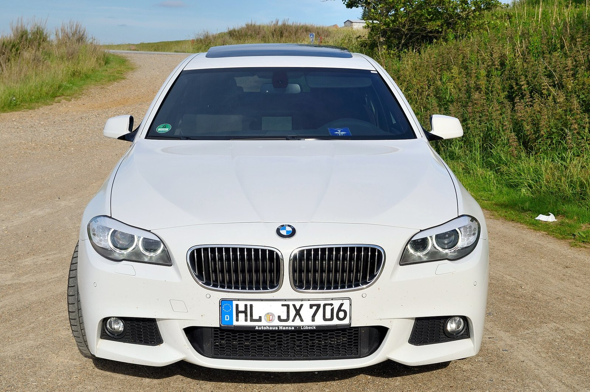

Всё начинаетсяс движения.
Мотор задаёт характер. Трансмиссия подхватывает. Ходовая превращает ускорение в ощущение контроля. Заглянем под поверхность F10.
Внутренняя архитектураОБ/МИН
Рядная компоновка / I6Движение в деталях
BMW F10 / Бензин
535i
Шесть цилиндров. Один характер.
Рядная бензиновая шестёрка объёмом 2 979 см³. Плавная работа и широкая полка момента делают ускорение уверенным без постоянной смены передач.
- Конфигурация
- 6 в ряд
- Рабочий объём
- 2 979 см³
Три версии. Три характера.
Учебная визуализация принципа работы, не точная геометрия двигателя BMW. Движение замедлено; обороты условные.
- Мощность
- 306л.с.
- Крутящий момент
- 400Н·м
- Разгон 0–100 км/ч
- 5,7с
- Комбинированный расход EU
- 7,2л/100 км
Седан без xDrive, 8-ступенчатая АКПП, стандартные шины 225/55 R17. Значения — из официальной таблицы BMW ↗. Расход по циклу EU не равен расходу в вашей поездке. Лошадиные силы здесь — метрические PS.
Одна система.
Три важных части.
От первого импульса до контакта с дорогой. Выберите узел и проследите, как передаётся движение.
Характер
под капотом.
Продольное расположение двигателя — основа классической компоновки. У 535i — 6 цилиндров в ряд, рабочий объём 2 979 см³. Мощность достигает 225 кВт при 5 800–6 000 об/мин.
Схема показывает принцип компоновки, а не точную геометрию. Код двигателя не указан в выбранном техническом листе: для конкретной машины сверяйте документы и VIN.
Плавно.
И вовремя.
Сравниваемые версии оснащены 8-ступенчатой автоматической коробкой Steptronic. Она передаёт момент через карданный вал на заднюю ось; возможность ручного выбора передачи сохраняется.
В официальных листах АКПП — опция. Данные разгона и расхода здесь взяты именно из значений для автоматической трансмиссии, а не механической.
Мощность —
только начало.
Передняя двухрычажная подвеска и задняя многорычажная система работают вместе, чтобы контролировать положение колеса. Пружины, амортизаторы и шины определяют, как автомобиль реагирует на дорогу.
Адаптивные амортизаторы и активные системы шасси зависят от комплектации. Нельзя определить их наличие только по шильдику 520d, 528i или 535i.
Не только
пиковая цифра.
Когда приходит момент
Полка крутящего момента выбранной версии — 1 200–5 000 об/мин. Этот диапазон важнее для повседневного ускорения, чем одна цифра на шильдике.
Что влияет на расход
Температура, маршрут, трафик и размер колёс меняют результат. Официальный комбинированный цикл нужен для сопоставления машин в одинаковых условиях.
Как читать характеристики
Сначала год и рынок. Затем привод и коробка. Только после этого — сравнение. 528i ранних лет и 528i в нашей таблице могут иметь разные двигатели.
535i / Паспортная мощность
306МЕТРИЧЕСКИХ ЛОШАДИНЫХ СИЛ
225 кВт при 5 800–6 000 об/мин.

Цифры объясняют.
Дорога показывает.
Создан, чтобы чувствовать.
Динамика — не только разгон до ста. Это понятная реакция на газ, предсказуемый поворот и запас тяги при обгоне. Чтобы получить полную картину, оцените состояние конкретного автомобиля, его шины и историю обслуживания.
Источники и границы сравнения
Фото: Wladyslaw Sojka · Free Art License 1.3 ↗.
BMW Group, «Specifications of the BMW 5 Series Sedan, valid from July 2013», опубликовано 26 июня 2013. Страницы 1–2: двигатель, момент, трансмиссия, разгон, максимальная скорость и расход. В скобках в PDF — значения для АКПП.
Интерактивный двигатель — авторская условная модель рядной поршневой компоновки, а не цифровая копия конкретного агрегата BMW. Число цилиндров связано с выбранной версией; движение, материалы и разнесённый вид служат объяснению принципа и не предназначены для ремонта или расчётов.
Шкала мощности сравнивает паспортные значения, не результаты замера. Управление оборотами учебной модели не меняет характеристики автомобиля.